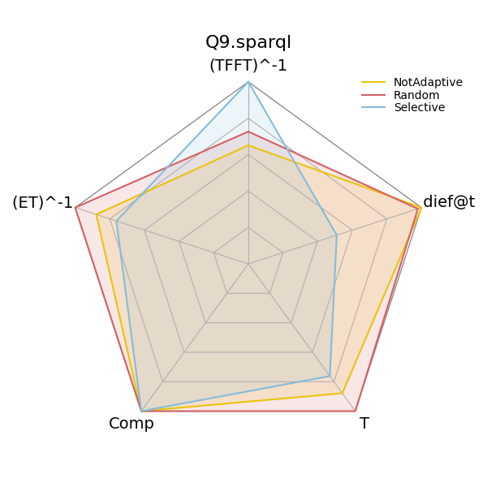

Note
Click here to download the full example code
4.4. Comparing dief@t with Other Metrics
Experiment 1 in [1] compares the performance of three variants of nlDE using conventional metrics from the query processing literature and dief@t.
The method diefpy.performance_of_approaches_with_dieft computes the results reported in the previously mentioned
experiment, i.e., dief@t, time to first tuple, execution time, number of answers produced, throughput,
inverse time to first tuple, and inverse execution time.
import diefpy
import pandas as pd # for displaying the data in a nice way
COLORS = ["#ECC30B", "#D56062", "#84BCDA"]
# Load the answer trace file with the query traces from FigShare.
traces = diefpy.load_trace("https://ndownloader.figshare.com/files/9625852")
# Load the result of the other metrics (execution time, etc.) from FigShare.
metrics = diefpy.load_metrics("https://ndownloader.figshare.com/files/9660316")
# Create all metrics from the `traces` and `metrics`
exp1 = diefpy.performance_of_approaches_with_dieft(traces, metrics)
Inspect the results for query Q9.sparql
throughput is computed as comp/totaltime
invtfft is computed as 1/tfft
invtotaltime is computed as 1/totaltime
pd.DataFrame(exp1[exp1['test'] == "Q9.sparql"]).head()
Create radar plot to compare the performance of the approaches with dief@t and other metrics. Plot interpretation: Higher is better.
Conclusion: For Q9.sparql, the values of the metrics from the literature indicate that the three nLDE
variants are competitive approaches. Yet, dief@t allows for uncovering that nLDE Not Adaptive is able to
continuously produce answers at a faster rate than the other approaches for this query until the slowest approach
finalizes its execution.
Total running time of the script: ( 0 minutes 15.106 seconds)